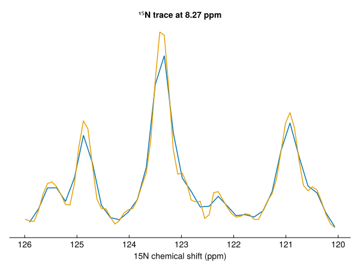
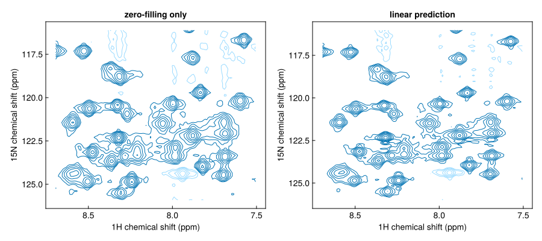

Process a 2D with linear prediction
Indirect dimensions are often acquired with few points, so their FIDs are truncated before the signal has decayed. linearpredict extends them by extrapolating the signal, which gives sharper lines than zero-filling alone. This page processes the ¹H,¹⁵N spectrum of ubiquitin with and without linear prediction in the ¹⁵N dimension.
using NMRTools, CairoMakie
fid = exampledata("2D_HN"; fid=true, firstpoint=Dict(T2Dim => 1.0))
size(fid)(1024, 64)The ¹⁵N dimension has 64 complex points. Its first point is sampled half a dwell time after t = 0, which is why it needs a first-order phase of −180°, so it should not be scaled by 0.5 as a t = 0 point is: firstpoint=Dict(T2Dim => 1.0) keeps it as recorded. The phases below are the ones used to process this dataset in TopSpin, which can be copied directly (see Phasing).
With autoprocess
autoprocess takes per-dimension settings as a Dict, keyed by dimension. Here the phases are fixed in both dimensions:
phases = Dict(F1Dim => (-247.9, 218.4), F2Dim => (90.0, -180.0))
plain = autoprocess(fid; window=Dict(T1Dim => Cos2Window(), T2Dim => CosWindow()), phase=phases)
size(plain)(2048, 128)Step by step, with linear prediction
Process the direct dimension first, so that each indirect vector belongs to one direct-dimension frequency, then extend the indirect dimension before apodizing it:
predicted = fid |>
apodize(T1Dim, Cos2Window()) |> zerofill(T1Dim) |> ft(T1Dim) |>
phase(F1Dim, -247.9, 218.4) |>
linearpredict(T2Dim) |>
apodize(T2Dim, CosWindow()) |> zerofill(T2Dim) |> ft(T2Dim) |>
phase(F2Dim, 90.0, -180.0) |>
realest
predicted[F2Dim, :td]128linearpredict(T2Dim) doubled the ¹⁵N dimension to 128 points. The window applied afterwards spans the extended FID.
Comparing
A ¹⁵N trace through a peak shows the narrower line:
trace(s) = s[Near(8.27), 120 .. 126]
fig, ax, _ = nmrplot(trace(plain); title="¹⁵N trace at 8.27 ppm")
nmrplot!(ax, trace(predicted))
fig = Figure(size=(900, 400))
nmrplot(fig[1, 1], plain[7.5 .. 8.7, 116 .. 126]; title="zero-filling only")
nmrplot(fig[1, 2], predicted[7.5 .. 8.7, 116 .. 126]; title="linear prediction")
Options
npointssets the length after prediction;factor(default 2) multiplies the current length.ordersets the number of prediction coefficients (defaultclamp(td ÷ 2, 8, 32)).pool=true(default) estimates one set of coefficients from the strongest vectors and applies it to all of them, which is much faster than fitting each vector.replace=nrebuilds the firstnpoints by backward prediction instead of extending the FID, for example to repair distorted first points.direction=:backwardprepends points, for FIDs that start after t = 0 (see FIDs modified bycryoproc1d).
Predict modestly: doubling the number of points is usually safe, while extending further can create artefacts from noise.